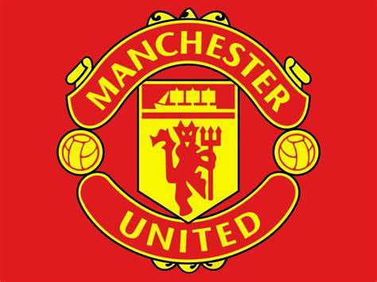

Aqui você tem as noticias mais recentes do Manchester united
O Manchester United está se preparando para fazer uma proposta irrecusável para Harry Kane.
O técnico Erik ten Hag fez da superestrela da Inglaterra e do Tottenham Hotspur sua prioridade número 1 neste verão, e o CEO do United, Richard Arnold, sancionou um possível acordo.
Os cartolas do United não vão esperar até o final da temporada para abrir negociações com o Spurs na esperança de chegar a um acordo de £ 80 milhões (cerca de 508 milhões de reais).
Kane será muito procurado neste verão e também é alvo do Bayern de Munique, Barcelona e Chelsea.
Mas Ten Hag quer ficar à frente de seus rivais e está ansioso para que as negociações com o Spurs comecem nas próximas semanas.
O holandês acredita que a chegada de Kane transformaria o United em verdadeiros candidatos ao título na próxima temporada. Kane completará 30 anos em julho e tem apenas mais uma temporada restante em seu contrato com os Spurs.
Ele sabe que está chegando ao auge de sua carreira e está ficando sem tempo para cumprir sua ambição de jogar mais futebol na Liga dos Campeões e ganhar troféus.
O presidente do Spurs, Daniel Levy, espera que o técnico que ele nomear para substituir Antonio Conte seja um nome grande o suficiente para persuadir Kane a ficar. Mas sabe-se que Kane mais uma vez pressionará para deixar o clube londrino e que o United é sua escolha preferida.
Enquanto isso, surgiu que as ofertas revisadas para comprar o United ficaram aquém do preço pedido de £ 6 bilhões (pouco mais de 38 bilhões de reais). Sheikh Jassim Bin Hamad Al Thani e Sir Jim Ratcliffe apresentaram suas melhores ofertas na semana passada, mas não atingiram a avaliação dos Glazers, atuais donos do clube.
Outras conversas estão planejadas entre o clube e todas as partes interessadas na esperança de chegar a um acordo.